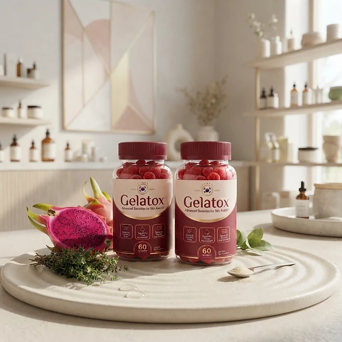
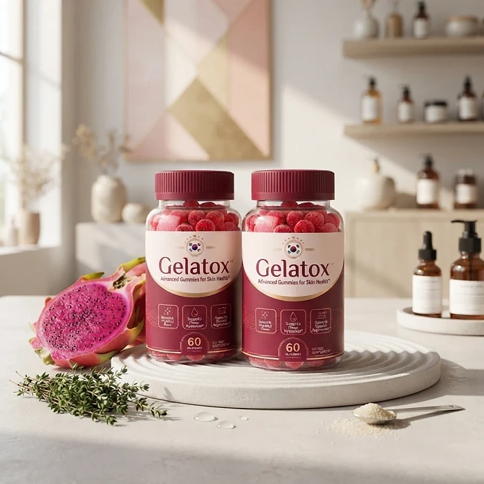

What Is Gelatox And How Does It Work?
Gelatox is a gummy-form dietary supplement designed to support radiant skin, stronger hair, and visibly healthier nails for adults who want to address the dullness, brittleness, and thinning that often accompany stress, aging, and nutritional gaps through a natural, enjoyable approach — without relying on expensive topical creams, invasive procedures, or complicated beauty routines.
It utilizes a concentrated blend of B-complex vitamins, high-concentration biotin, and targeted antioxidants to support cell renewal, keratin production, and the skin's natural protective barrier, helping the body maintain its beauty-related functions from the inside out.
The ingredients in Gelatox are selected for their recognized roles in skin health and regeneration. According to the official website, the formula works on three fronts simultaneously: accelerating cellular renewal so the skin replaces old, dull cells with fresh ones; strengthening the natural moisture barrier to lock in deep hydration; and providing antioxidant support to help defend against free-radical damage that may contribute to premature aging.
Each nutrient in the formula was chosen for its ability to reach deep tissue layers where standard topical creams typically cannot penetrate. The official website states that by delivering these micronutrients internally through a gummy format, the body may absorb and distribute them more efficiently than through surface-level application alone.
Gelatox is manufactured in the United States under strict quality-control standards, according to the manufacturer. The product comes in a gummy format that the brand describes as easy to incorporate into a daily routine, with a pleasant taste designed to encourage consistent use over extended periods.
It is important to note that Gelatox is a dietary supplement, not a medication. Individual results may vary depending on factors such as age, existing nutrient levels, overall diet, and consistency of use. The official website recommends a treatment period of several months for optimal results, with the 6-bottle package being the most popular choice among customers.
As with any supplement that targets skin, hair, and nail health, Gelatox is designed to complement — not replace — a balanced diet and healthy lifestyle. People with specific medical conditions or those who are pregnant or nursing should consult a healthcare professional before starting any new supplement regimen.
Gelatox Ingredients
The Gelatox formula contains five key nutrients that, according to the official website, work together to support skin vitality, hair strength, and nail resilience from the inside out. Below is a closer look at each ingredient and its stated role in the formula:
Biotin: Often called the "beauty vitamin," biotin is an essential B vitamin that plays a central role in keratin production — the structural protein that forms the foundation of skin, hair, and nails. According to the official website, biotin in Gelatox helps rebuild and strengthen these core structures from within, supporting stronger nails that are less prone to chipping, more resilient hair, and a firm, smooth skin texture.
Vitamin B12 (as Methylcobalamin): This premium, highly bioavailable form of B12 targets cellular replication and regeneration of healthy skin cells. The official website states it may accelerate the body's natural renewal processes, potentially leading to faster recovery of minor blemishes and a more even, glowing complexion with a well-rested appearance.
Vitamin B6 (as Pyridoxine Hydrochloride): Described as a key metabolic regulator, Vitamin B6 in the formula is included for its potential role in controlling excess oil production, particularly in the face's T-zone. By helping balance internal signals that may overstimulate sebum-producing glands, it is designed to support shine-controlled skin, with a potential reduction in blackheads and cleaner-looking pores.
Folate: This B vitamin is included for its role in deep cellular renewal. According to the manufacturer, folate stimulates the production of fresh, healthy tissue to replace old, dull cells. The intended result is a complexion that appears rejuvenated and feels soft, smooth, and refreshed.
Pantothenic Acid (as D-Calcium Pantothenate): Also known as Vitamin B5, this nutrient is described as supporting deep hydration by stimulating the production of essential lipids that reinforce the skin's natural protective barrier. According to the official website, it helps lock in moisture to support plump, elastic skin that resists dryness and flakiness even under challenging conditions.
All five ingredients belong to the B-vitamin family, which plays a well-documented role in skin, hair, and nail health. The official website emphasizes that these nutrients are delivered in a gummy format for improved absorption and ease of daily use.
It is worth noting that while these vitamins are widely recognized for their roles in beauty-related bodily functions, individual responses to supplementation can vary. People who already receive adequate amounts of these nutrients through their diet may experience different results than those with existing deficiencies.
Gelatox Side Effects
According to the official Gelatox website and FAQ section, the supplement is manufactured under strict quality-control standards and contains only ingredients that are generally recognized as safe. The official FAQ states: "Gelatox is manufactured under strict quality control standards and contains only safe ingredients."
The formula is based on B-complex vitamins (Biotin, B12, B6, Folate, and Pantothenic Acid), which are water-soluble nutrients that the body typically processes and eliminates naturally. Water-soluble vitamins generally do not accumulate in the body the way fat-soluble vitamins can, which may reduce the risk of excess buildup.
However, the official website does include a recommendation not to exceed the suggested serving of two gummies per day. Additionally, pregnant or nursing mothers, children under 18, and individuals with known medical conditions are advised to consult a physician before use — a standard precaution for dietary supplements.
As with any supplement, individual reactions can vary. While the ingredients in Gelatox are commonly found in multivitamins and beauty supplements, some people may experience mild digestive adjustments when introducing a new supplement into their routine. If you have specific health concerns or are taking medications, consulting your healthcare provider before starting any new supplement is always a prudent step.
Gelatox Dosage
The recommended dosage for Gelatox is straightforward: two gummies per day, taken approximately 30 minutes before a morning or afternoon meal with a full glass of water.
According to the official website, this timing allows the nutrients to be absorbed more efficiently on a partially empty stomach, giving the B-complex vitamins and biotin time to enter the bloodstream before the digestive system is occupied with processing a full meal.
Consistency is emphasized as an important factor. The manufacturer recommends maintaining the daily routine without skipping doses, as the B vitamins in the formula are water-soluble and are continuously processed by the body. A steady intake helps maintain consistent nutrient levels throughout the day.
The official FAQ suggests that most customers choose the 6-bottle package, which covers a full six-month treatment cycle. This extended timeframe is described as ideal for allowing the ingredients to build up and work consistently within the body, particularly for people seeking long-term improvements in skin texture, hair strength, and nail resilience.
The official website advises against exceeding the recommended serving of two gummies per day. Taking more than the suggested amount does not necessarily accelerate results and may not be advisable without professional guidance. As always, individuals with specific health conditions should consult a healthcare professional before beginning any supplementation regimen.
Gelatox – Refund Policy
Gelatox is backed by a 60-day money-back guarantee, which the official website describes as a "Results Or Refund Guarantee." This policy is designed to let customers try the product with reduced financial risk.
According to the official FAQ, if a customer is not completely satisfied with their experience, they can contact the support team within 60 days of purchase to initiate a refund. The support email listed on the official website is contact@customercs.com, and the FAQ states that responses are typically provided within 48 business hours.
The 60-day window applies from the date of purchase, giving customers approximately two months to evaluate whether the supplement meets their expectations. Given that the manufacturer recommends consistent daily use for best results, this period allows time to follow the suggested routine before making a final judgment.
It is also worth noting that Gelatox purchases are described as one-time payments with no auto-ship, recurring charges, or hidden fees. According to the FAQ, customers only pay for what they select at checkout, and there are no subscription-based billing arrangements attached to any package.
As with any online purchase, it is advisable to keep order confirmation emails and to review the specific terms and conditions on the official website at the time of purchase, as refund policies may be updated over time.
The 60-day guarantee, combined with the absence of recurring charges, suggests a straightforward purchasing experience. Customers who have questions about the refund process can reach the support team directly through the email address provided on the official website.
Gelatox – Where To Buy
Gelatox is sold exclusively through its official website. It is not available in retail stores, pharmacies, or third-party online marketplaces such as Amazon or eBay. The manufacturer has chosen to sell directly to consumers, which they state helps ensure product authenticity and quality control.
The official website offers three purchasing options: a 2-bottle package (60-day supply), a 3-bottle package (90-day supply), and a 6-bottle package (180-day supply). According to the FAQ section, the 6-bottle option is the most popular choice among customers, as it covers a full six-month treatment period that the manufacturer considers optimal for allowing the B-vitamin complex to work consistently within the body over an extended timeframe.
Because Gelatox uses what the manufacturer describes as high-quality ingredients produced in small batches, the official website mentions that inventory can sell out. The FAQ recommends securing a supply while current stock is available, though this is a common marketing approach and should be evaluated at the reader's own judgment.
To ensure you’re getting the authentic product, most users choose to visit the official website.
Is Gelatox A Scam?
Based on the information available on the official website, Gelatox presents itself as a legitimate dietary supplement with a transparent ingredient list, a clearly stated manufacturing origin (United States), and a 60-day money-back guarantee. These are characteristics typically associated with established supplement brands.
The formula is built on B-complex vitamins — Biotin, B12, B6, Folate, and Pantothenic Acid — which are well-documented nutrients with recognized roles in skin, hair, and nail health. These are not obscure or unproven compounds; they appear regularly in peer-reviewed research and are common components of multivitamins and beauty supplements worldwide.
The official website references scientific institutions such as Harvard University, the National Center for Biotechnology Information (NCBI), PubMed, The Lancet, and the National Institutes of Health (NIH), while including a disclaimer that the company is not endorsed by, sponsored by, or affiliated with these organizations. This transparency about the lack of direct institutional endorsement is a positive indicator.
The purchasing process is described as a one-time payment with no auto-ship or hidden subscription — a point the FAQ addresses directly. The 60-day refund policy provides a window for customers to evaluate the product and request a return if unsatisfied.
However, as with any supplement, it is important to maintain realistic expectations. Dietary supplements are not medications and are not evaluated by the FDA for the treatment or cure of any disease. Results may vary significantly between individuals depending on age, diet, lifestyle, and existing nutrient levels.
For those who want to verify product details or check current availability, the official Gelatox website remains the safest option.

Check Availability On Official Website